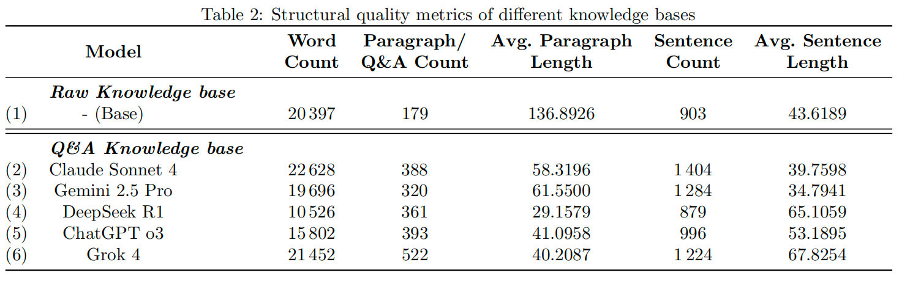
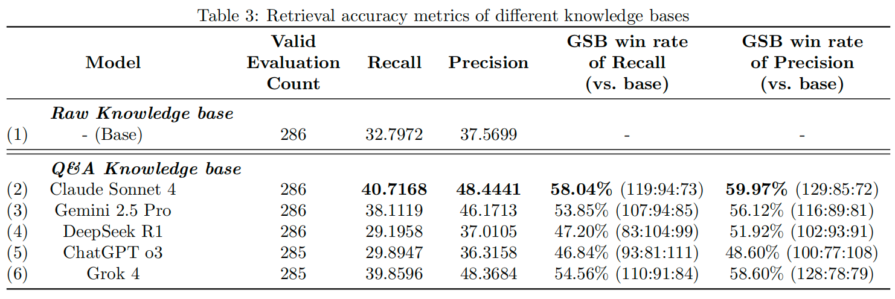

Experiment & Analysis
Dataset
- 11 documents from ELEC3442 Embedded System course
- 286 benchmark queries for evaluation
- Comprehensive testing across diverse question types
Performance Metrics
- Comprehensive evaluation across text quality and retrieval metrics
- LLM-as-Judge evaluation framework
- Consistent improvements across diverse educational scenarios
Text Quality Enhancement
- Gemini 2.5 Pro achieved optimal readability performance
- Claude Sonnet 4 and DeepSeek R1 led in content richness
- Significant improvements in text coherence and technical depth

Text readability and content richness metrics across different knowledge bases

Structural quality metrics across different knowledge bases
Retrieval Accuracy Results
- ~20 percentage points improvement in recall and precision
- Claude Sonnet 4: 58.04% recall and 59.97% precision GSB win rates
- Qualitative cases: Traditional KB (0% recall, 0% precision) vs Q&A KB (80% recall, 90% precision)

Retrieval accuracy metrics across different knowledge bases
Interactive Demo of knowledge retrieval and responses by chatbots that use two knowledge bases. On the left is a chatbot using the baseline knowledge base, while on the right is a chatbot using our Proposed Q&A knowledge base.
实验与分析
数据集
- ELEC3442嵌入式系统课程的11个文档
- 286个基准查询用于评估
- 跨多种问题类型的综合测试
性能指标
- 跨文本质量和检索指标的综合评估
- 基于LLM的评判框架
- 在多种教育场景下的一致性改进
文本质量提升
- Gemini 2.5 Pro在可读性方面表现最佳
- Claude Sonnet 4和DeepSeek R1在内容丰富度方面领先
- 文本连贯性和技术深度显著改善
不同知识库的文本可读性和内容丰富度指标
不同知识库的结构质量指标
检索精度结果
- 召回率和精确率提升约20个百分点
- Claude Sonnet 4：GSB胜率达58.04%(召回率)和59.97%(精确率)
- 定性案例：传统知识库(0%召回率，0%精确率) vs 问答知识库(80%召回率，90%精确率)
不同知识库的检索准确性指标
使用两个知识库的聊天机器人进行知识检索和回复的互动演示。左侧为使用基础知识库的聊天机器人，右侧为使用我们提出问答对知识库的聊天机器人